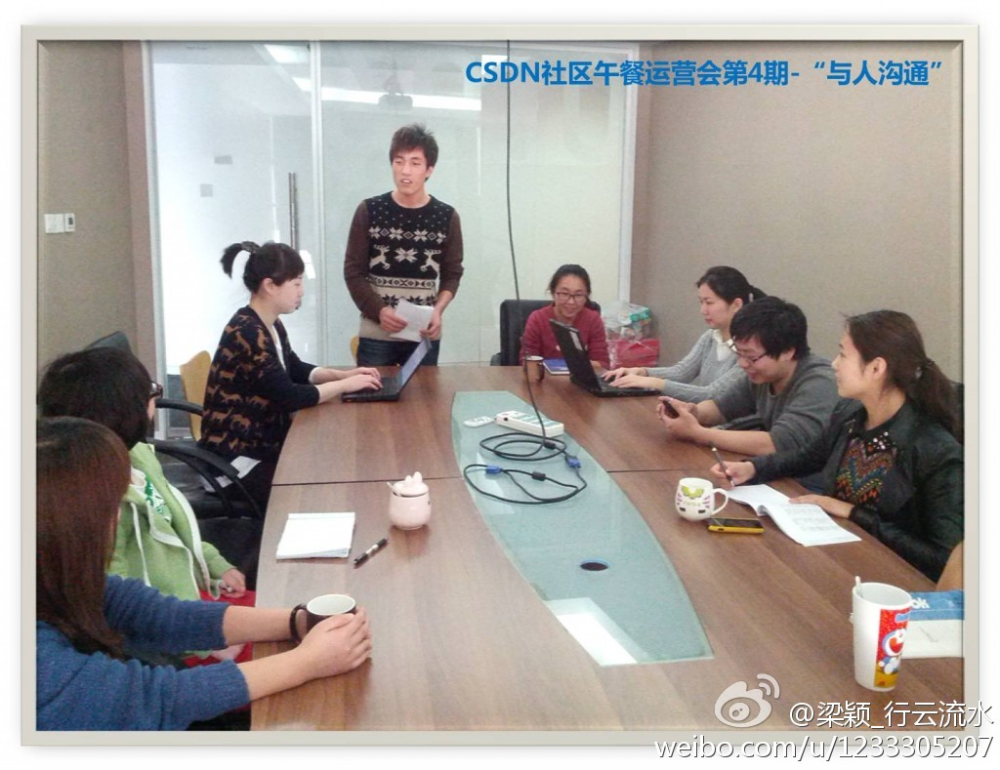

听说现在创业没年初那么容易拿投资了，这时候的创业活动会更热闹吗？

Ada李力
2013-01-09

Ada李力
2013-01-09
梁颍是午餐会的专职记者。
@梁颖_木水辰:
2013新年后的第1期午餐会在‘花团锦簇’中拉开帷幕。来自@CSTO外包平台 的缪岩同学分享了‘与人沟通’的经验和技巧。CSDN社区运营午餐会第4期–“与人沟通” - ichbinwasser的专栏 - 博客频道 - CSDN.NET  网页链接 @Ada李力 @Adela可爱多 @-Gylu_CSDN缪岩 @有志青年李大叔 @gentlesea
网页链接 @Ada李力 @Adela可爱多 @-Gylu_CSDN缪岩 @有志青年李大叔 @gentlesea
- 